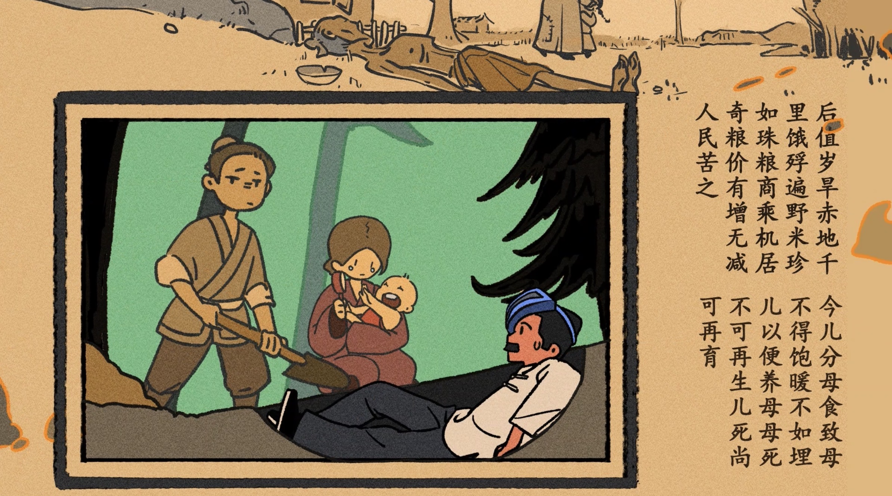
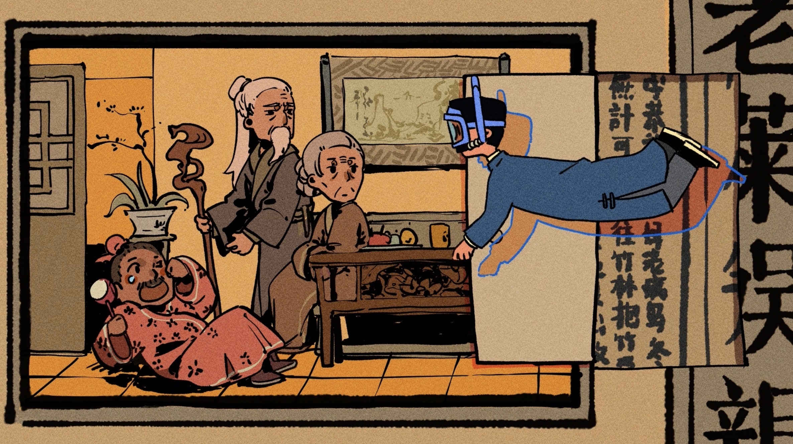

Animated Short Film · BFA Thesis · 2024
Xun
《迅》
An animated short film that translates the literary world of Lu Xun into image, motion, and emotion.
《迅》
An animated short film that translates the literary world of Lu Xun into image, motion, and emotion.
Watch the film — approximately three minutes.

Hosted on Bilibili · open in Bilibili directly if the player does not load
Lu Xun (1881–1936) is one of the most consequential writers in modern Chinese literature — a critic, satirist, and reformer whose work shaped how generations of Chinese readers think about their own society. He is also, paradoxically, a writer most younger Chinese readers have come to avoid: required in textbooks, weighted down by exams, frozen in the public imagination as a stern figure with a sharp pen. His full range — the affection, the absurdity, the appetite for sweets, the stubborn humor — rarely survives the translation into the classroom.
Decades of visual adaptations have not helped: most reach for the same heavy palette, the same realist register, the same selection of his darkest stories. The result is a writer the public respects and rarely reads. Xun was made to test a different hypothesis: that bright color, dream-logic, and image-driven storytelling could give a contemporary audience a way back into a body of work they have learned to keep at arm's length.
The page is structured for an international Health Tech audience who may not know Lu Xun. They do not need to. The film's method — taking a subject the public avoids and making people want to look at it — is the same method Health Tech needs for behavior change, stigma reduction, and patient education.
Most adaptations of literary work are organized by the original's plot. Xun is not. The film is organized by the visual and emotional through-line of Lu Xun's own writing — the recurring images of fragmented light, sudden cold, falling, biting, opening doors — not by the chronology of his life or the order of his books. A scene transitions to the next not because the next event happened, but because an emotion or a movement carries the eye there. This is the working principle Patrick Wells calls "subjective relevance": build the adaptation around the viewer's felt connection to the work, not around the source's structural skeleton.
The film runs without timestamps and without captions naming which story is being shown. The young Lu Xun fights a pig under a tamarind tree; a hairpin becomes a row of teeth; a stack of pastries collapses into the famous human-blood mantou; a book eats a child and becomes an iron house. Audiences who know Lu Xun's work recognize the references; audiences who do not still feel the structure. This is the design bet: that the felt logic of one writer's whole imagination can be conveyed without the prose.
Xun deliberately breaks with the grayscale convention of Lu Xun adaptations. Saturated reds, warm yellows, deep blues, and a printed-paper grain make the film feel like a vintage comic book — a register that signals affection, play, and seriousness simultaneously. The choice is not decorative: it is an argument that Lu Xun's writing itself contains all of these tones, and that previous adaptations have under-served his range.

Lu Xun's diaries from 1913–1915 record fifteen separate visits to Dao Xiang Cun, the first "Southern-style pastry shop" in Beijing. The stickier truth: the man known to the public for sharp political prose was, privately, a documented sweets enthusiast.
After Lu Xun trips and a tooth flies free, the screen floods with pastries — yang-geng, lotus-seed porridge, sticky rice in white sugar, persimmon-frost cakes, lun-jiao gao, and a few generic moon cakes added for visual rhythm. Most of the named pastries appear in the actual diaries.
The shot operates as a single visual joke that does serious work: it argues, in three seconds, that the figure the audience thinks they know is incomplete — without a line of dialogue. For Health Tech: the same move — a single delightful visual that re-frames a person the audience thought they had pegged — is exactly what patient-facing content needs when fighting stigma.


Lu Xun's essay The Twenty-Four Filial Exemplars critiques three classical "filial piety" tales: an old man dressing as a child to amuse his parents, a son lying on a frozen river to thaw it for his mother, and a father preparing to bury his own infant alive to save resources for his elder relative. Lu Xun grew increasingly bitter across each.
Lu Xun himself enters the book and meets each scene. The conflict escalates per page: the first scene is merely awkward; in the second, the freezing man Lu Xun tries to help knocks him out of the page; in the third, a couple casually tries to bury Lu Xun and the baby together. He flees with the child.
The film does not tell the viewer that Lu Xun's critique sharpens across the three tales — it makes the viewer feel the sharpening by escalating the on-screen conflict in lockstep with the essay's rising contempt. For Health Tech: the same principle turns a clinical guideline ("these three behaviors progressively worsen outcomes") into something a patient viscerally understands rather than nods through.

Three of Lu Xun's most famous images, drawn from different works: the cry of "eat people" from A Madman's Diary; the closing plea "save the children" from the same; and the iron-house metaphor from the preface to Call to Arms — a sealed iron room full of sleeping people who will suffocate; should one shout to wake them, knowing they cannot escape?
Lu Xun, fleeing, looks down to find the child gone. He turns to see the giant book in front of him eat the child. The page bleeds red and contracts into a long red form, then folds itself into a cube, which is then bound with iron strips into a sealed iron house.
Three textual images from three different sources are sequenced into a single continuous visual transformation — the most ambitious twelve seconds in the film. For Health Tech: this is the move that turns a multi-factor health concept (genetics + environment + behavior) into one coherent visual story instead of three disconnected explainers.

Lu Xun: "She shivered in the cold night air, dreaming of the coming spring… the gaunt poet wiping his tears onto her last petal…" (Autumn Night). And from The Mentor: "There are those who want to move forward."
A tear from the kneeling Lu Xun falls into the eye-socket of a skeleton, lands on a flower bud growing inside, and the bud opens. The opening becomes a yawning young person waking up. More young people wake. They are dazzled by light from across the floor: a pen has propped open a heavy door. A maple leaf with a worm-hole drifts in.
The visual causal chain (tear → bud → opening → youth waking → light → propped door → leaf) must convey, in pure image, that one writer's grief becomes the next generation's awakening. No narration, no on-screen text. For Health Tech: causal chains delivered visually outperform causal chains delivered verbally for almost every patient-education task that has been measured. This shot is proof of fluency in that mode.
Drag to scroll
For frame-by-frame correspondences with Lu Xun's writing, see the thesis paper — "The Visual Expression of Lu Xun's Themes," Yang Yanzhi, Tsinghua University, 2024.
Xun was the candidate's BFA thesis film at Tsinghua University Academy of Arts & Design, completed in June 2024 under the supervision of Associate Professor Chen Lei. The film was conceived, written, directed, and animated by the candidate, with assistance from a fellow student (Chen Siyu) on long animation days. The accompanying thesis paper, "The Visual Expression of Lu Xun's Themes — The Creative Practice of the Animated Work Xun," examines each major shot's textual sources and design rationale; it is available as a PDF below for readers who want to look further.
Five capabilities this film demonstrates, written for the Health Tech, digital health, and health-communication teams I'm looking to join.
I take research, clinical guidance, or behavioral concepts that are correct on paper but inert on the page, and render them in image and motion that audiences engage with on first viewing.
I structure communication around what the eye and the body follow, not around what the outline says. This is the working method for content that needs to land emotionally before it lands cognitively.
Every visual decision in Xun maps to a specific text. The same discipline applied to health communication means every visual claim maps to a specific clinical source — a non-negotiable for the field.
Experience treating a subject the public has learned to avoid — a stern textbook author, a difficult illness, a stigmatized behavior — by giving it back its full humanity, including humor and ordinariness, without flattening its weight.
Fifteen months from concept to a finished, defended thesis film, holding the work to a publishable standard with a small team and a real release date.
Thesis: "The Visual Expression of Lu Xun's Themes — The Creative Practice of the Animated Work Xun." Tsinghua University Academy of Arts & Design, June 2024. Document in Chinese; an English summary is available on request.